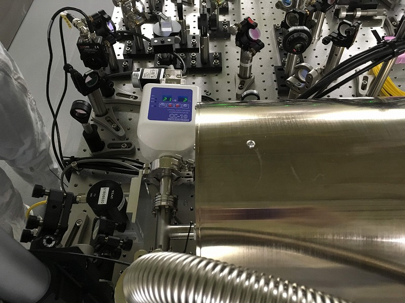

<h2>K1:PEM-ACC_PSL_TABLE_PSL1_Z</h2>

<ul>
  <li><b>Sensor :</b> Accelerometer (1-axis) </li>
  <li><b>Observable :</b> Acceleration [m/s<sup>2</sup>] </li>
  <li><b>Typical vable :</b> &mu;= 0 m/s<sup>2</sup>, &sigma; = ? m/s<sup>2</sup> </li>
  <li><b>Frequendy range :</b> ?? - ?? Hz</li>
  <li><b>Location :</b> On the PSL table, behind of the RefCav</li>
</ul>

<h3>Sample plot : </h3>
 <br>

<h3>Picture : </h3>
 <br>


